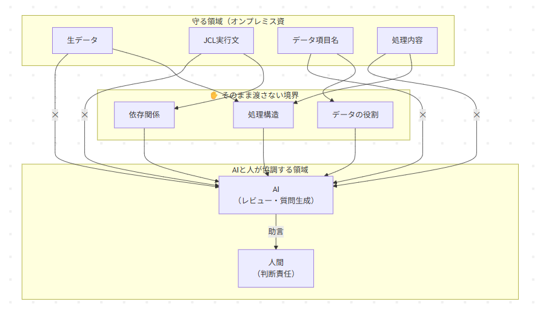
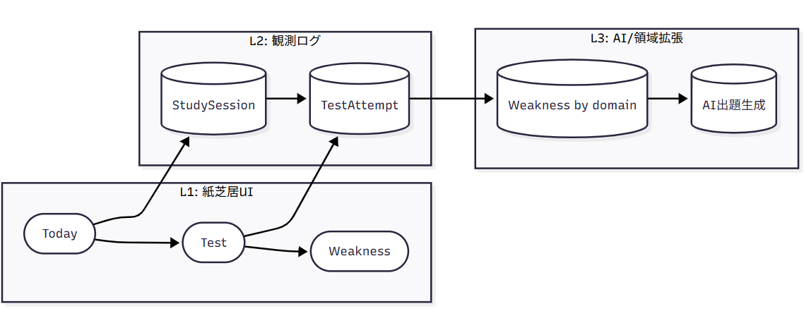
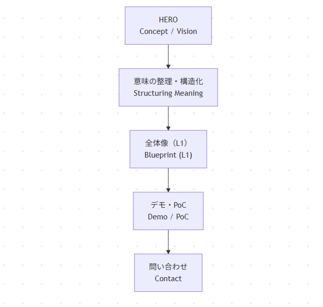
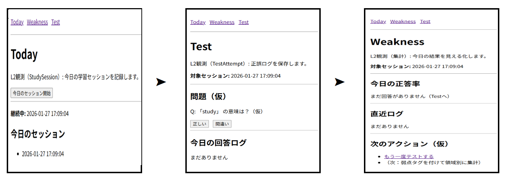

study-dx
DXとは、判断できる構造を設計すること。
AIの前に、境界と責任を決める。
このサイトは 図で合意し、判断してからPoCへ進むための研究・設計資産を置く場所です。
Research
日本のオンプレDX（研究トップ）
日本のオンプレミスは、技術ではなく「判断」の問題を抱えている。
COBOL・JCL・バッチ処理を中心とした日本の基幹系システムを、
壊さず・出さず・判断できる状態にするための研究です。
セクション1｜なぜこの研究か
日本では今もオンプレミスが主流です。AIは「使えそう」で「使い切れない」。
問題はAIの性能ではなく、境界と構造が定義されていないことにあります。
セクション2｜この研究で扱うもの
- COBOLバッチ処理
- JCL／ジョブネット
- データと処理の依存関係
- AIと人間の役割分担
※ 実データ・実業務コードは扱いません。
セクション3｜基本思想
- 壊さない：既存資産と並走する
- 出さない：そのままAIに渡さない
- 判断を人が持つ：AIはレビューと質問生成に限定する
セクション4｜研究の進め方
- note：疑似体験として公開
- study-dx.com：図と構造（資産）を蓄積
- 勉強会・PoC：検証して更新
セクション5｜現在地（進行中）
👈 🟡 NOW
記事1：境界を知る
study-dx.comに図を公開中
記事 近日公開予定

この図が示すのは「AIを使う／使わない」ではなく、何をそのまま渡さないかという境界です。
- 記事1.5：なぜバッチ処理になったのか
- 記事2：AIに渡してよい／ダメな情報
- 記事2.5：なぜレガシーは残っているのか
- 記事3：AIの価値を知る
- 記事4：協調設計の全体像
Method
PoC Blueprint（設計思想）
学習支援DXを、
観測からはじめるための設計アプローチ。
AIは判断しません。意味の整理と構造化だけを支援します。
PoC全体像（L1 / L2 / L3）

L1（紙芝居UI）→ L2（観測ログ）→ L3（弱点領域×AI）の順で拡張します。
PoC構造図（Mermaid / L1）

編集は .mmd、公開は PNG 固定。設計思想を安定して共有します。
L1 UI（Today → Test → Weakness）

操作順は Today → Test → Weakness。判断視点で紙芝居として並べています。
Example
英検DX
「判断できる状態をつくる」という設計思想を、学習支援DXの文脈で具体化した例です。